Every film. Ranked. Reviewed. No mercy.
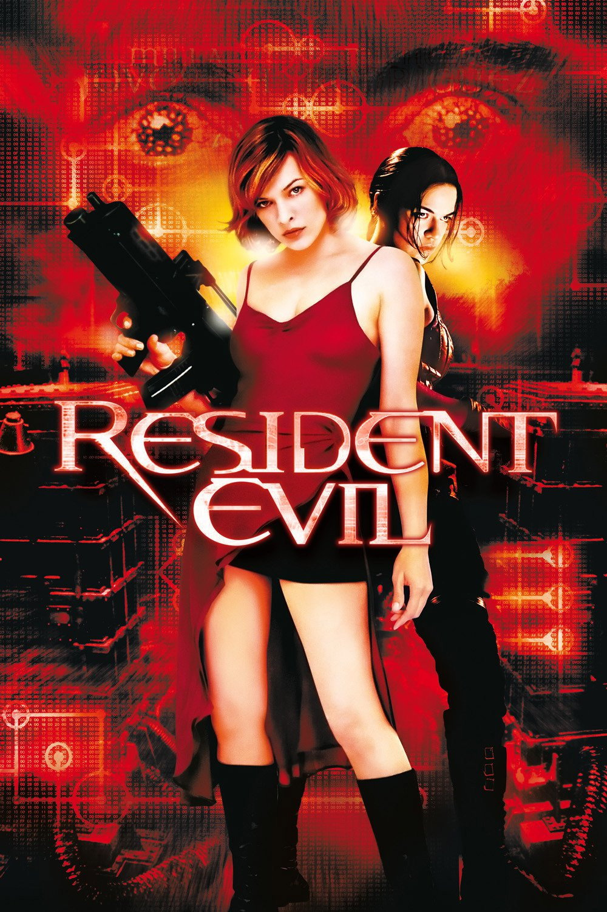
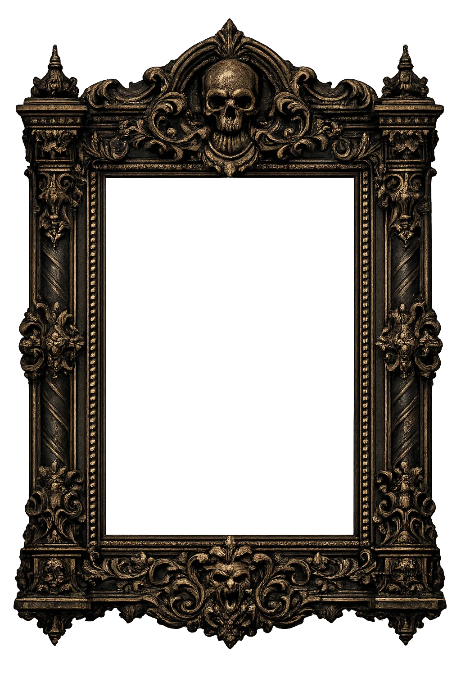
When Resident Evil came out I was not sure what to expect. The decision to introduce Alice as a completely original protagonist rather than adapting Leon, Claire or Jill was a bold one. At the time I was willing to go along with it because I assumed that if the films performed well, the game characters would eventually appear in later entries.
I came to this film properly in the 2010s after becoming heavily invested in horror as a genre and in the Resident Evil franchise specifically. Watching it with that context made certain things clearer. The film works reasonably well as a standalone zombie movie that happens to exist in the Resident Evil universe. The Hive is a genuinely effective setting. The Red Queen is memorable. The laser corridor sequence is the kind of inventive practical horror setpiece that studios rarely commit to anymore. The zombie dogs remain genuinely unsettling.
My biggest frustration was always the complete disconnection from the games. If these events are happening alongside the incidents in Resident Evil 1, 2 and 3, why is there never any acknowledgment of that? The mansion is right there. Raccoon City is collapsing. Leon and Claire are fighting for their lives in the RPD. None of it connects. The film exists in its own sealed bubble, which made it feel like a missed opportunity every time I thought about it.
That said, stripped of the brand expectations, this is a competent and occasionally effective horror action film. If it had been released under a completely different name with no Resident Evil connection I would probably have enjoyed it just as much. As an adaptation it falls short. As a zombie movie it holds up better than most people give it credit for.
Out of all the Milla Jovovich films this is easily the strongest entry and the one most worth revisiting.
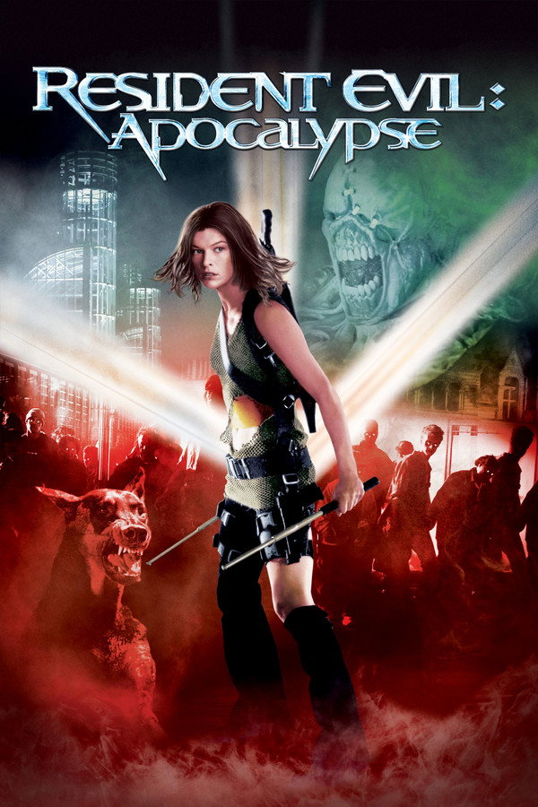
Apocalypse immediately gave the series more credibility by introducing Nemesis and Jill Valentine. Sienna Guillory as Jill was genuinely impressive. She looked the part, captured the attitude and confidence of the classic Resident Evil 3 version of the character, and delivered one of the most faithful game character adaptations across the entire film franchise. Her performance understood what made Jill work in the games. She felt capable, battle hardened and real in a way that most of the other casting in these films never managed.
The problem is that everything around Jill falls apart quickly. The film becomes increasingly over the top as it progresses and the handling of Nemesis is where it loses me completely. In the games Nemesis is a Tyrant bioweapon specifically engineered and deployed to hunt and eliminate S.T.A.R.S. members. He is relentless, terrifying and represents Umbrella at its most dangerous. In this film he spends most of his screen time pursuing Alice instead, and the revelation that he was created using a character from the first film undermines everything that makes the character frightening. The moment where he suddenly recognizes Alice and begins fighting alongside her is one of the most bizarre creative decisions in the entire franchise. It fundamentally misunderstands what Nemesis is and what he represents.
Apocalypse has enjoyable moments and Jill elevates every scene she appears in. But the film cannot hold itself together and the further it strays from its strongest element the more it falls apart. A generous 6 out of 10 and that generosity is almost entirely for Sienna Guillory.
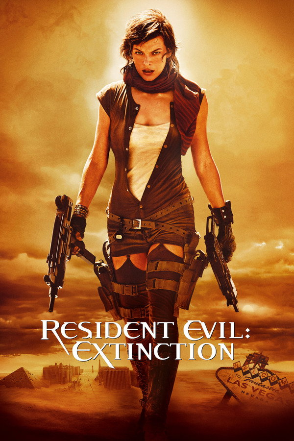
Extinction made the most interesting creative decision of the entire franchise by moving the series into a post apocalyptic desert setting. Zombies in a wasteland, the world already lost, survivors scraping together whatever resources remain. That visual identity at least gave the film something different to offer compared to the urban and underground settings of the previous two entries.
Unfortunately the film never figures out what to do with that concept beyond using it as a backdrop. The desert setting is striking in the opening act and then largely wasted as the story defaults to familiar action sequences and increasingly unconvincing CGI. The giant mutant crow attack is exactly the kind of moment that should feel genuinely threatening and instead plays as unintentional comedy.
The acting throughout is competent but forgettable. No performance stands out. No character development sticks. The story moves from one set piece to the next without building any real momentum or emotional investment in what happens to anyone on screen.
Extinction is not offensively bad. It is just completely forgettable in a way that is almost more frustrating than being genuinely terrible. A bad film at least gives you something to react to. Extinction gives you very little to react to at all. 5 out of 10.
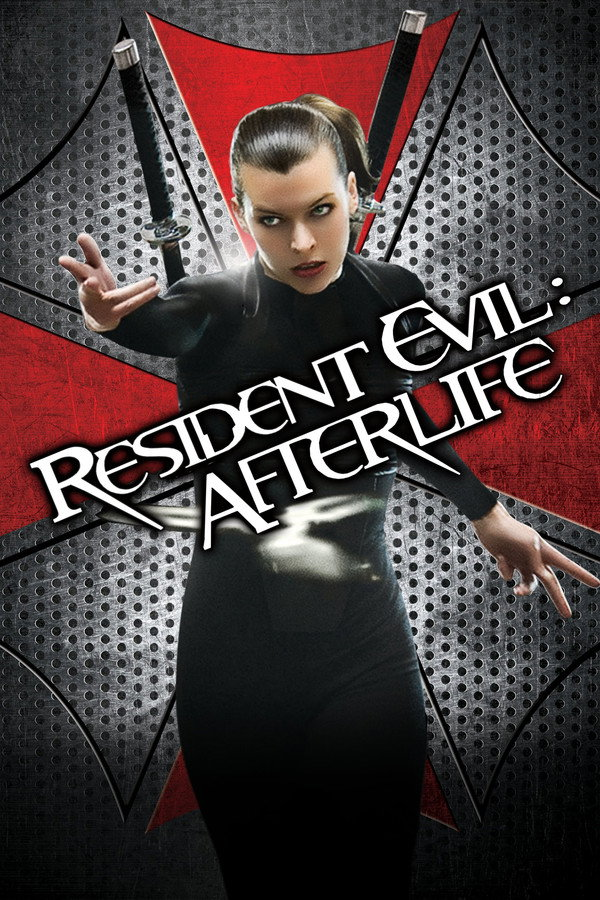
Afterlife introduced Chris Redfield to the film franchise, though the casting never quite convinced me. The actor had the physicality but not the presence and the film gave him so little to work with that the character barely registered beyond being a familiar name attached to an unfamiliar face.
The prison setting is the strongest element Afterlife has to offer. Confined spaces, limited resources, survivors who do not trust each other, the sense that there is nowhere safe to retreat to. For a brief stretch the film generates something approaching genuine tension and it is no coincidence that this happens when the setting forces the characters together and removes their options.
The giant executioner creature is a memorable design and the boss fight concept showed some imagination. The armored vehicle escape sequence gave the film a brief pulse of Dawn of the Dead energy that the rest of the runtime never quite matches. These are isolated moments of something working in a film that otherwise coasts on spectacle without substance.
The 3D presentation the film was designed around has not aged well at all. What was presumably impressive in cinemas in 2010 plays as gimmicky and distracting watched today. Too many shots exist purely to justify the format rather than to serve the story.
Afterlife sits comfortably alongside Extinction as a film that is not quite bad enough to be memorable for the wrong reasons and not nearly good enough to be memorable for the right ones. 5 out of 10.
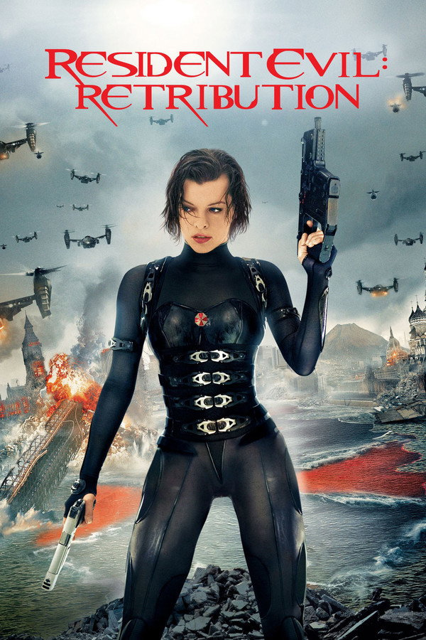
Retribution is where the series completely lost me and I suspect where it lost most people who were still holding on. The film leans fully into the science fiction action direction the franchise had been drifting toward since Extinction and abandons any pretense of being a horror series entirely.
Leon Kennedy and Ada Wong both appear and both look reasonably close to their game counterparts. Leon in particular is one of the better visual representations the franchise managed. But visual resemblance is where the faithfulness ends. Neither character has anything interesting to do and the film buries them under an avalanche of clones, simulations, alternate realities and increasingly convoluted mythology that serves no purpose beyond extending a story that had already run out of ideas.
The action sequences are technically competent but emotionally empty. When everything is a simulation and every character might be a clone it becomes impossible to care about the outcome of any confrontation. Stakes require consequences and Retribution strips away any sense that consequences exist.
By this point the Resident Evil film franchise felt more like a sci fi action property that had borrowed the name than anything connected to what made the games work. Retribution did not kill the series but it made very clear that the series had nothing meaningful left to say. 4 out of 10.
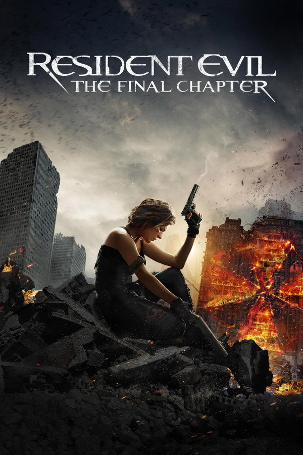
The Final Chapter is the worst film in the franchise and the manner in which it fails is almost impressive in its consistency. Every element that could go wrong does go wrong and several things go wrong that you would not have thought possible.
The story attempts to tie together six films worth of increasingly tangled mythology and instead introduces new contradictions, retcons established facts and delivers a finale that somehow makes the overall narrative more confusing rather than less. The revelation that Alice is a clone built from the memories of the real Alicia Marcus is the kind of twist that might have landed with weight if the films had been building toward it. Instead it lands as a desperate attempt to give a character who never had a compelling origin story a retroactive one.
One genuine positive deserves acknowledgment. The actor who played Wesker in this film was genuinely impressive. He looked exactly right, carried himself with the cold arrogance the character demands and delivered his lines with a conviction that the surrounding film did not deserve. In a better franchise, with better material, that Wesker could have been something special. Here he is one bright spot in a very dark room.
The editing is some of the worst I have ever seen in a major studio release. Action sequences cut every one to two seconds making it literally impossible to follow what is happening spatially. Characters appear to teleport between positions. Fights that should build tension instead generate confusion and mild nausea. It is the kind of editing that suggests the film was not working and the solution chosen was to cut fast enough that nobody could notice.
The ending resolves the zombie apocalypse in a way that feels rushed, arbitrary and profoundly unsatisfying. When the credits rolled I felt primarily relieved that it was over. That is not how a finale should feel. 3 out of 10 and the Wesker performance is the only reason it is not lower.
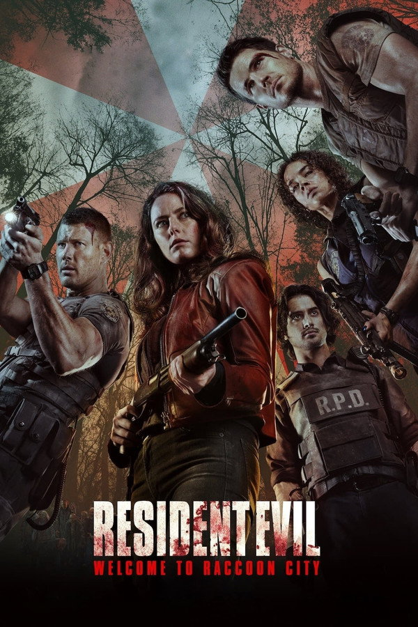
When Welcome to Raccoon City was announced I was genuinely optimistic for the first time in years. The Milla Jovovich era was finally over. The trailers suggested something much closer to the source material. A film that actually wanted to be Resident Evil rather than a film that happened to share the name.
The optimism did not survive contact with the actual film.
The casting is the most immediate problem. Leon did not work. Wesker did not work. Jill did not work. The performances are not necessarily bad in isolation but none of them feel like the characters they are supposed to represent. The one genuine exception is Robbie Amell as Chris Redfield. He looked the part, carried himself convincingly and felt believable as Chris in a way that previous film versions of the character never quite managed. I would happily see him return in future adaptations if the franchise gets another chance.
The fundamental structural mistake is the decision to combine Resident Evil 1 and Resident Evil 2 into a single film. These are two distinct stories that work precisely because of their separation. The Spencer Mansion and the RPD are two completely different horror environments that generate completely different kinds of tension. Chris, Jill and Wesker belong in the mansion. Leon and Claire belong in the police station. Merging them into one narrative strips away the isolation and claustrophobia that make both stories work.
The filmmakers had the exact blueprint they needed sitting right in front of them and still could not figure out how to use it. After finally escaping the Milla Jovovich films the franchise somehow managed to produce another disappointing adaptation. 4 out of 10.
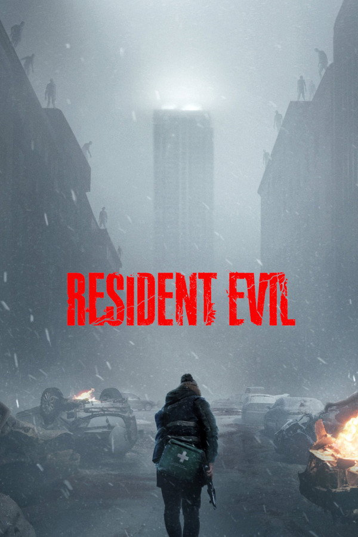
Review pending release. Prediction based on available footage.
This film is not out yet so this is not a review. It is a prediction based on everything shown so far and everything Zach Cregger has said about his approach to the material.
The trailer alone gave me more confidence in this film than anything the franchise has produced in over two decades. The atmosphere is immediately correct. The tension is palpable. The resource scarcity that defines the best Resident Evil games is right there on screen in the way characters move, the way they check their ammunition, the way every encounter feels genuinely dangerous rather than choreographed.
Cregger has talked openly about playing through the games himself before beginning production. That matters more than it sounds. Every previous filmmaker approached Resident Evil as an IP to exploit. Cregger is approaching it as a fan who understands what the games actually feel like to play. The difference in the footage is immediately visible.
The decision to follow a new protagonist rather than immediately reaching for Leon, Claire or Chris is exactly the right call. It creates the same Outbreak energy that made that game concept so compelling. An ordinary person, an extraordinary situation, not enough resources and nowhere safe to go. The green herbs visible in the background of certain shots, the RE4 easter eggs that have been spotted by fans, the general attention to detail throughout the promotional material all suggest a filmmaker who did his homework.
If this film delivers on the promise of its trailer it has the potential to completely surpass every Resident Evil film that came before it. I am going in with genuine excitement for the first time since the franchise began.
Predicted score: 8 out of 10. Update pending release.
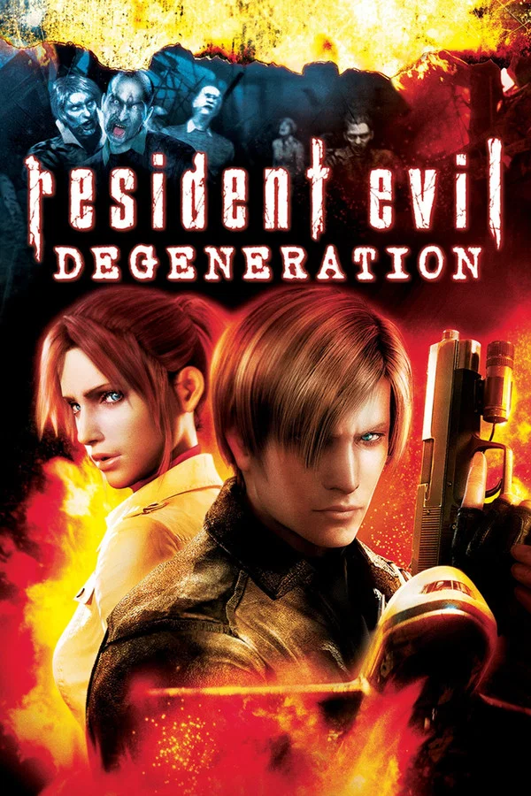
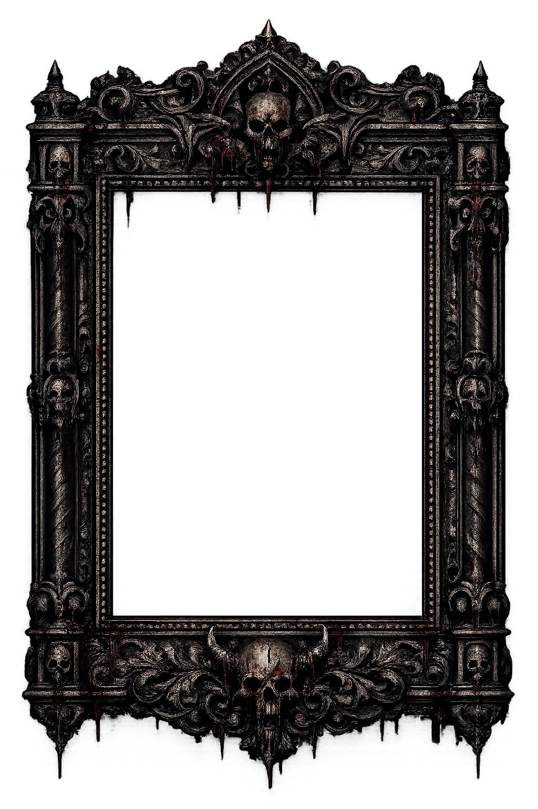
Degeneration is the first attempt at a fully animated canonical Resident Evil film and for what it is, it works reasonably well. Leon and Claire reuniting at Harvardville Airport during an outbreak is exactly the kind of setup the franchise should have been exploring in live action years earlier. Two characters with genuine history, a familiar threat, a contained environment. The bones are solid.
The animation looks dated now and looked only adequate at the time of release. The character models are stiff in ways that become distracting during emotional scenes and the facial expressions rarely match the weight of what the dialogue is asking them to convey. The action sequences fare better because movement hides what stillness exposes.
The antagonist and the threat behind the outbreak follow a structure that will become deeply familiar across all five of these films. Someone has a virus. Someone is using it for personal reasons. The heroes fight through waves of infected, confront something monstrous at the end, and resolve the situation with a combination of gunfire and exposition. Degeneration does this first which gives it some credit but establishes the template that the subsequent films never break free from.
Seeing Leon and Claire together again was genuinely exciting in 2008 and remains the film's strongest asset. Their dynamic works. Their history gives the interactions weight that original characters in these films never achieve. Cool to see them in an animated film. Beyond that it does not leave much of an impression. 6.5 out of 10.
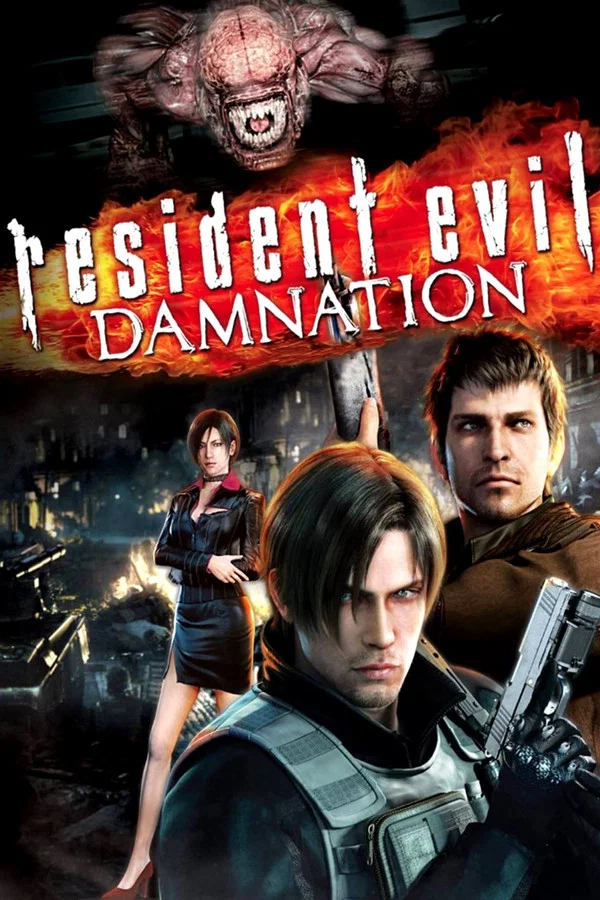
Damnation takes Leon to an Eastern European country in the middle of a civil war where Las Plagas is being used as a bioweapon by rebel forces. Ada Wong returns. The political backdrop gives the film more texture than Degeneration attempted and the Eastern European setting is genuinely atmospheric in ways the airport of the previous film was not.
The Licker sequences are where Damnation most clearly misunderstands what made those enemies frightening in the games. In Resident Evil 2 a single Licker in a corridor is a genuine threat that forces you to move slowly and carefully. Here multiple Lickers are deployed in broad daylight as combat units and the threat they represent dissipates almost immediately. The horror logic of the games requires scarcity. Damnation gives you abundance and loses the tension that abundance destroys.
Ada Wong is well used here and her presence adds a layer of intrigue the story needs. The conspiracy threading through the narrative is more interesting than the action set pieces and the film is at its best when it slows down and lets the politics breathe.
Leon is written consistently well across all of these films and Damnation is no exception. He is professional, capable and carries the weight of everything he has seen without it being constantly narrated. The same template as Degeneration, executed with slightly more ambition. 6 out of 10.
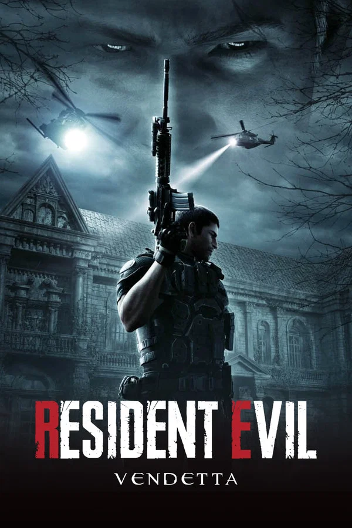
Vendetta opens in a mansion and for a brief stretch it feels like something genuinely special. The claustrophobia, the darkness, the sense of being trapped in a space designed to disorient and kill. It captures something the previous two films did not manage and immediately signals that this entry has different intentions.
Then it goes off the rails in the way these films always go off the rails. The action escalates beyond what the horror premise can support and by the final act you are watching something closer to an animated blockbuster than a survival horror story. That is a consistent frustration across all five films and Vendetta is not immune to it.
What saves it is the cast. Rebecca Chambers returning in a lab coat, clearly having built a life and a career in the years since RE0, is genuinely satisfying. She deserved more screen time in the mainline series and Vendetta at least acknowledges her competence and gives her something meaningful to do. The moment where she is in danger and the stakes feel real is one of the better emotional beats across all of these films.
The narrow space sequence where Leon and Chris have to work together against zombies in close quarters is exactly the kind of scene this franchise does well when it commits to it. Two experienced operators in an impossible situation, using the environment, covering each other. It works completely and shows what the whole film could have been with different priorities in the third act.
The best of the animated films and the one most worth watching. 7 out of 10.
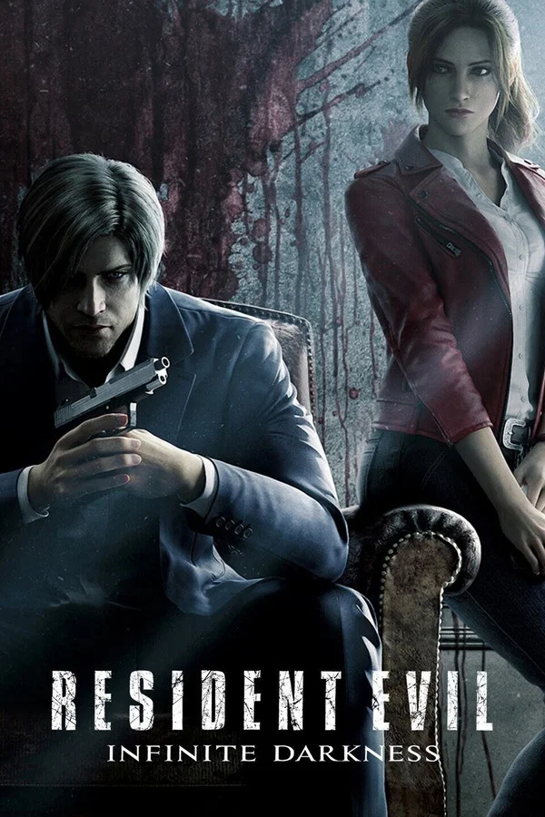
Infinite Darkness arrived during the period when Netflix discovered Resident Evil existed and decided to produce multiple adaptations simultaneously. The live action series they produced in the same era, featuring a reimagined Wesker with children in a near future setting, was one of the more baffling creative decisions the franchise has ever produced and has nothing to do with anything the games established. Infinite Darkness is significantly better than that simply by being recognizable as Resident Evil.
Leon investigating a zombie incident at the White House while Claire separately uncovers a government conspiracy in a foreign country is a workable premise. The political thriller framing gives the story more texture than pure action would and the four episode structure allows more breathing room than a ninety minute film. The conspiracy itself is more interesting than the monsters and the film is at its best when it leans into that.
The end boss sequence is the most game-like moment across all five animated films. Something genuinely monstrous, confined space, limited options. It briefly captures what the games feel like in a way the rest of the runtime does not.
Claire is sidelined in ways that feel like a writing failure. She is one of the franchise's best characters and Infinite Darkness gives her a storyline that never connects to the main narrative with the impact it should. The series left room for continuation and then did not continue. In the context of Netflix's broader retreat from ambitious animated projects that ending makes sense but it remains unsatisfying.
Forgettable but not offensive. Better than the Milla Jovovich films, which is the consistent benchmark for this section of the archive. 5.5 out of 10.
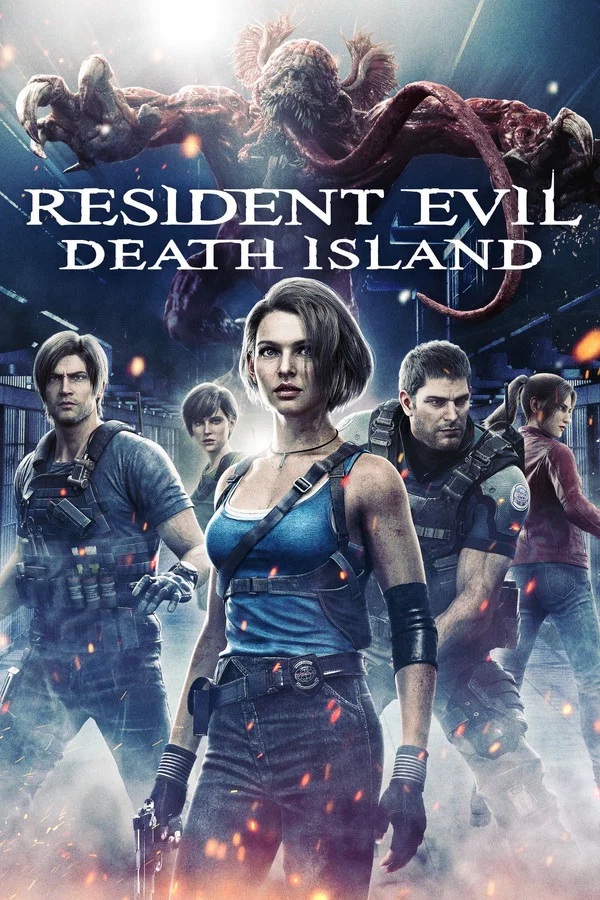
Death Island assembles the largest cast in the history of the animated films and delivers exactly what that assembly promises. Fan service, spectacle and a plot that exists primarily to justify putting everyone in the same location.
Jill Valentine returning is the headline and the film handles her reappearance with one genuinely interesting detail. She has not aged in the way that Chris, Leon, Claire and Rebecca clearly have. The explanation connects to what Wesker did to her during the events of RE5 and the T-virus modifications that kept her alive under his control. It is a small thing but it shows that someone thought carefully about the canon implications of bringing her back and that care is appreciated.
Leon drinking is the film's other memorable character beat. A running thread of him being burnt out and disillusioned, finding some relief in whiskey, a conversation with Chris that briefly addresses what years of this kind of work does to a person. It does not go far enough but it gestures toward something real and it is the most human moment in the film.
Everything else follows the established template without deviation. Evil person with a virus. Alcatraz as the setting provides atmosphere that the story does not fully exploit. A large monster at the end. The heroes prevail. The day is saved. The franchise continues.
The people who dislike this film are not wrong. It offers nothing new beyond the assembled cast and the Jill aging detail. But seeing everyone together, handled with basic competence and genuine affection for the characters, is enough to make it worth the runtime. Barely. 6 out of 10.